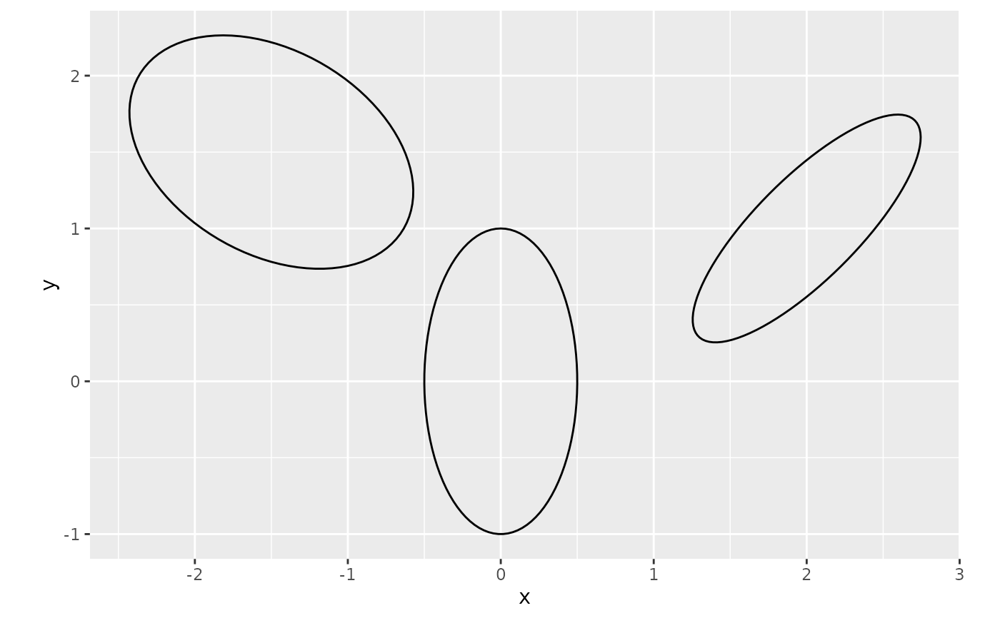
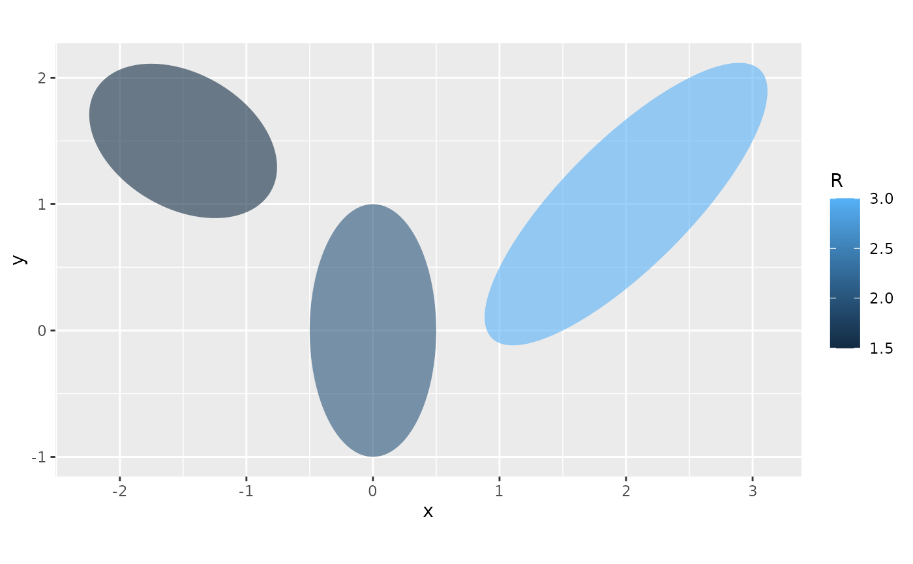

Draws one ellipse per row of the data. Each ellipse is defined by its centre
(x, y), its aspect ratio (R), and the azimuth of its long axis
(angle). Useful for strain ellipses, shape-preferred orientations, clast
fabrics, or any orientation data with an associated axial ratio.
Usage
geom_ellipse2(
mapping = NULL,
data = NULL,
a = 1,
n = 100,
show.legend = NA,
inherit.aes = TRUE,
...
)Arguments
- mapping
Set of aesthetic mappings created by
aes(). If specified andinherit.aes = TRUE(the default), it is combined with the default mapping at the top level of the plot. You must supplymappingif there is no plot mapping.- data
The data to be displayed in this layer. There are three options:
If
NULL, the default, the data is inherited from the plot data as specified in the call toggplot().A
data.frame, or other object, will override the plot data. All objects will be fortified to produce a data frame. Seefortify()for which variables will be created.A
functionwill be called with a single argument, the plot data. The return value must be adata.frame, and will be used as the layer data. Afunctioncan be created from aformula(e.g.~ head(.x, 10)).- a
Numeric. Length of the semi-major axis used for every ellipse (default
1). Ignored ifais mapped as an aesthetic. Give half the value if you have the full long-axis length.- n
Integer. Number of vertices per ellipse (default
100).- show.legend
logical. Should this layer be included in the legends?
NA, the default, includes if any aesthetics are mapped.FALSEnever includes, andTRUEalways includes. It can also be a named logical vector to finely select the aesthetics to display. To include legend keys for all levels, even when no data exists, useTRUE. IfNA, all levels are shown in legend, but unobserved levels are omitted.- inherit.aes
If
FALSE, overrides the default aesthetics, rather than combining with them. This is most useful for helper functions that define both data and aesthetics and shouldn't inherit behaviour from the default plot specification, e.g.annotation_borders().- ...
Other arguments passed on to
ggplot2::layer(), usually fixed aesthetics such ascolour = "black",fill = NA, orlinewidth = 0.3.
Details
The ellipses are drawn in data units, so use ggplot2::coord_fixed() (or
coord_sf() with a projected CRS) to keep their shape. The angle follows
the azimuth convention, measured clockwise from the positive y axis. It is
not the mathematical counter-clockwise angle from the x axis.
Aesthetics
geom_ellipse2() understands the following aesthetics (required ones are in
bold):
x,y: centre of the ellipseR: aspect ratio \(a/b \ge 1\)angle: azimuth of the long axis in degrees, clockwise from north (0= N-S,90= E-W)a: semi-major axis length, one value per ellipse (overrides theaargument)colour,fill,alpha,linewidth,linetype,group
See also
ellipse_points() for the underlying geometry.
Examples
library(ggplot2)
df <- data.frame(
x = c(0, 2, -1.5),
y = c(0, 1, 1.5),
R = c(2, 3, 1.5),
angle = c(0, 45, 120)
)
# Same semi-major axis for all ellipses
ggplot(df, aes(x, y, R = R, angle = angle)) +
geom_ellipse2(a = 1, fill = NA, colour = "black") +
coord_fixed()

# Semi-major axis mapped per ellipse, filled by aspect ratio
df$len <- c(1, 1.5, 0.8)
ggplot(df, aes(x, y, R = R, angle = angle, a = len, fill = R)) +
geom_ellipse2(alpha = 0.6) +
coord_fixed()
